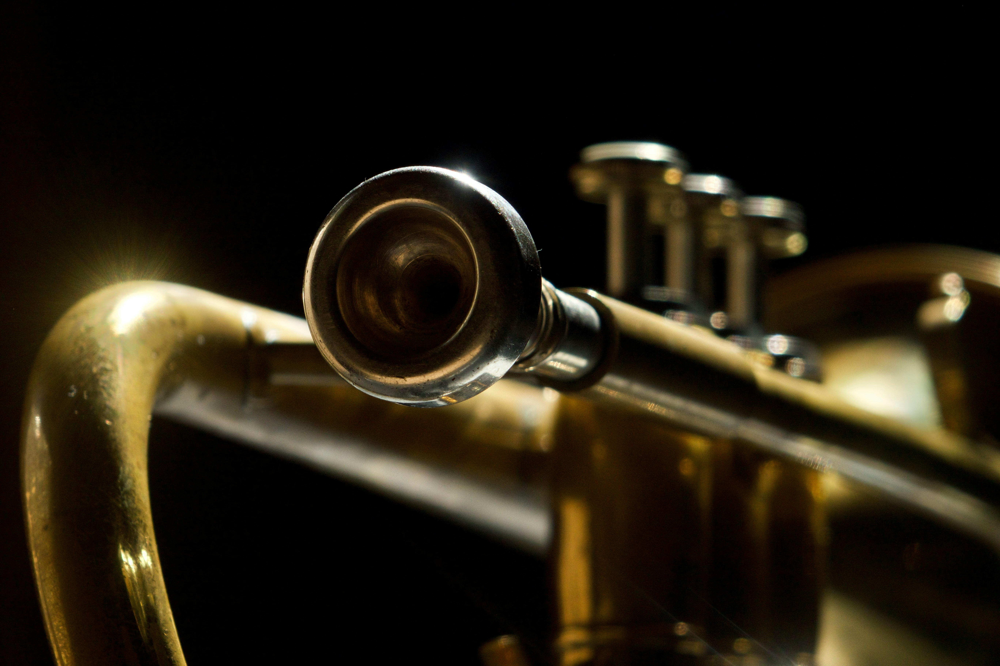
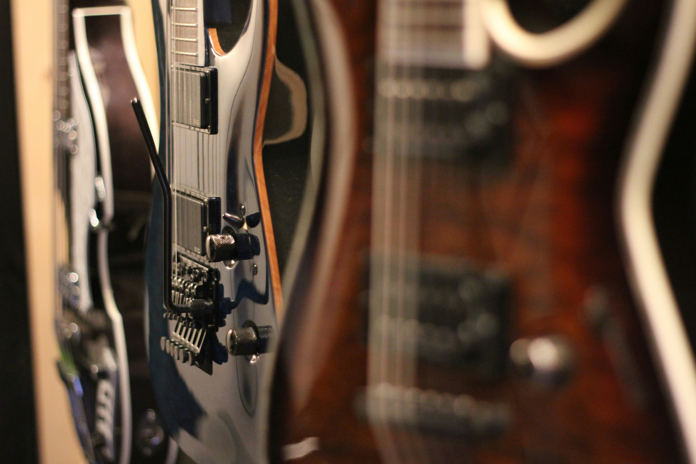
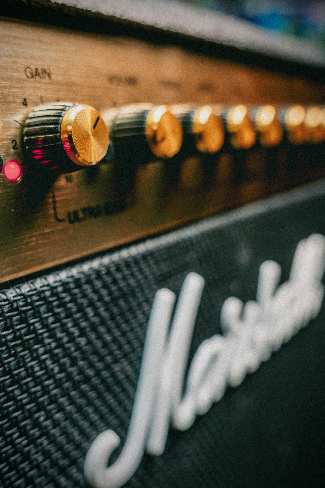

Percussions

Avant de regarder notre sélection de percussions, apprenez-en davantage sur les percussions en cliquant ici.
Explorez notre gamme de percussions :


Instruments à vent

Apprenez tout ce qu’il faut savoir sur les instruments à vent en cliquant ici.
Explorez notre gamme d'instruments à vents :


Instruments à cordes

Apprenez tout ce qu’il faut savoir sur les instruments à cordes en cliquant ici
Explorez notre gamme d'instruments à cordes :


Accessoires

Découvrez notre sélection d'accessoires
-
Métronomes

- Amplis 
Partitions

Découvrez notre sélection de partitions dans notre bibliographie de partitions.